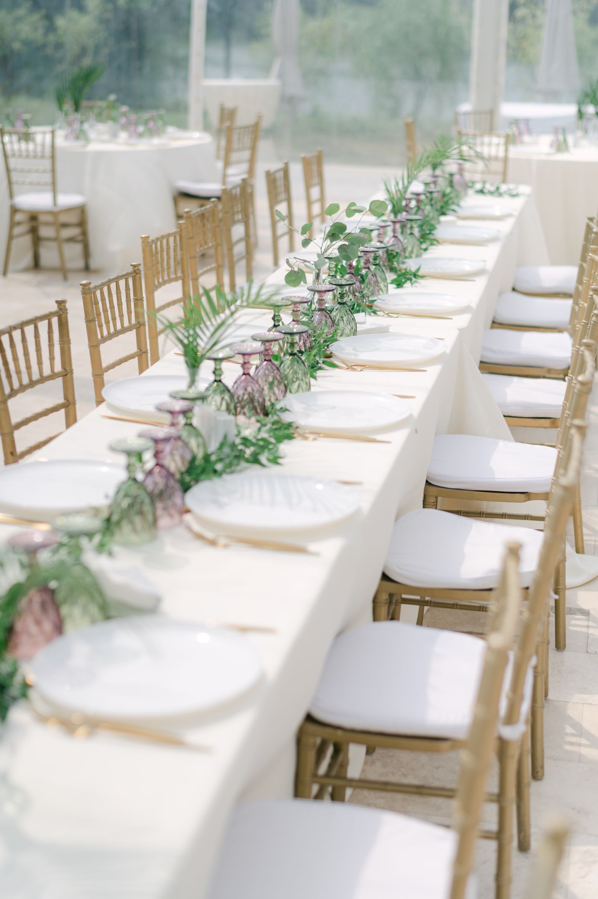
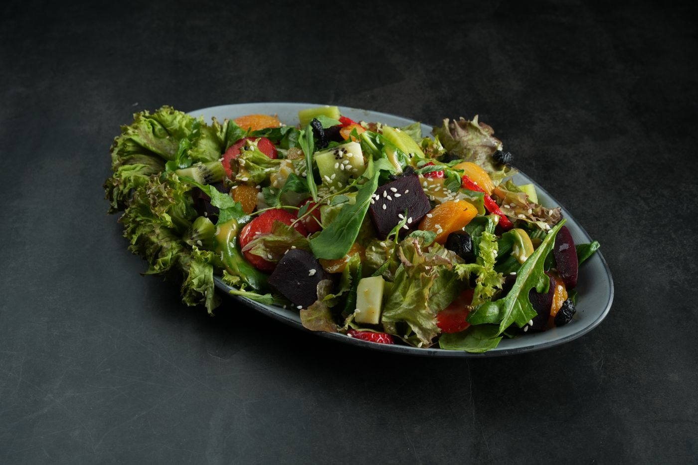
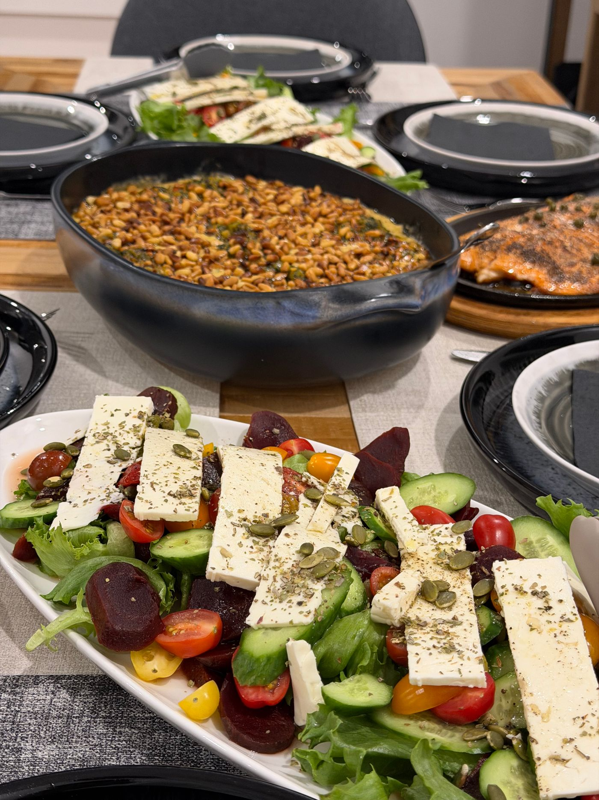

Weddings & celebrations
Welcome bites, generous sharing feasts and beautifully plated dinners, shaped around the way you want to celebrate.
FOR THE OCCASION. FOR THE EVERYDAY.
Beautiful food, easy gatherings and a week made lighter. There’s a place for all of it at Olive & Ember.
A taste of the menu ↓

Good food. A reason to gather.
OUR SERVICES
From a once-in-a-lifetime celebration to a well-planned Monday, choose the kind of care your table needs.
Welcome bites, generous sharing feasts and beautifully plated dinners, shaped around the way you want to celebrate.
Breakfast meetings, working lunches and evening receptions. Thoughtful food that fits the schedule and brings people together.
Birthdays, garden lunches and dinners at home. Relaxed menus and finishing touches that leave more time for your guests.
Golden pastries, bright fruit platters and savoury favourites, ready for baby showers, weekend catch-ups and early celebrations.

WEEKLY MEAL PREP
Seasonal lunches and comforting dinners, prepared in portions that fit your routine. A little planning now. One less thing to think about later.
A THOUGHTFUL WAY TO GATHER
Start with the occasion. Make room for the people. Build a menu that feels right. From a relaxed lunch to a beautifully laid celebration table, the little details belong together.
SOMETHING GOOD STARTS HERE
Try the enquiry preview. No bookings are sent.